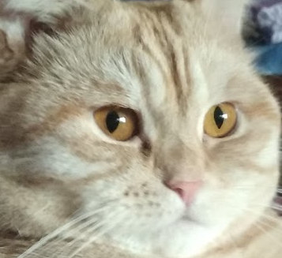

Welcome to a digital canvas of Lord Boris The Golden!
A place where the most beautiful pictures of cats come to live in all colors! Or maybe not even cats? All kinds of creatures are welcome to be depicted in this canvas
Have fun and enjoy your creations!
Welcome to Boris's digital canvas! Press and Hold LMB to draw, but beware, color of the brush is selected randomly! Use controls on the right to reset your drawing, change canvas resolution, or to show/hide grid. Enjoy your creations!